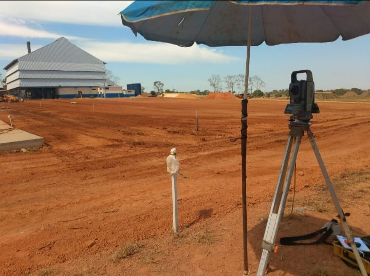

Sobre nós
Georrefenciamento e Topografia é na Topogeo, empresa séria e tradicional no mercado.
Atendendo a mais de 30 anos na região, família Grego, passando de geração em geração,
nessa você pode confiar.

Georrefenciamento e Topografia é na Topogeo, empresa séria e tradicional no mercado.
Atendendo a mais de 30 anos na região, família Grego, passando de geração em geração,
nessa você pode confiar.